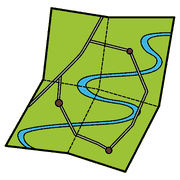
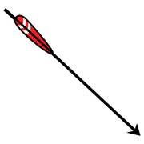
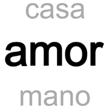

Modulo 5, ambienti e strumenti
Mappe mentali e concettuali
Due modi diversi di rendere visibile il pensiero: uno per associazione libera, l'altro per gerarchia. Come costruirli bene.
Due strumenti diversi

mappa pensare
pensare
frecciaMappa mentale
Ideata alla fine degli anni Sessanta dallo psicologo inglese Tony Buzan. Si procede per associazione libera, partendo da un'idea centrale.
Mappa concettuale
Serve a interpretare, rielaborare e trasmettere conoscenze. Ha una struttura gerarchica e rende visibile il ragionamento.
da controllare
sempre!
Tre regole per una buona mappa concettuale
 regole
regole
parolafreccia- Rispetta la gerarchiaPrima l'argomento generale, poi i particolari.
- Usa parole chiaveUna parola-concetto per ogni nodo.
- Scrivi i legamiLinee con verbi e connettivi. Senza legami la mappa è solo un elenco.
Gli strumenti
 computer
computer tablet
tablet disegnare
disegnareCanva, Popplet, Coggle.
Per gli studenti con DSA la mappa è uno strumento compensativo previsto dal PDP: l'obiettivo è che imparino a costruirla da soli, non solo a riceverla pronta.